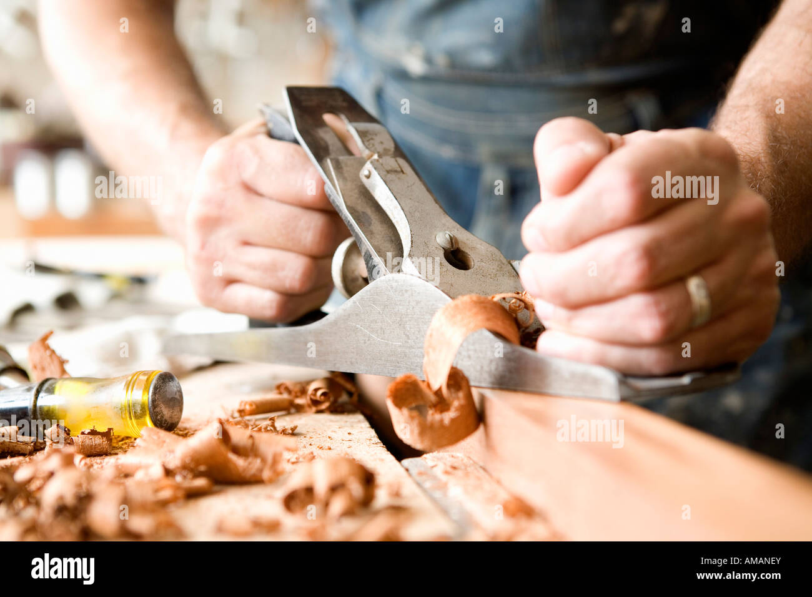
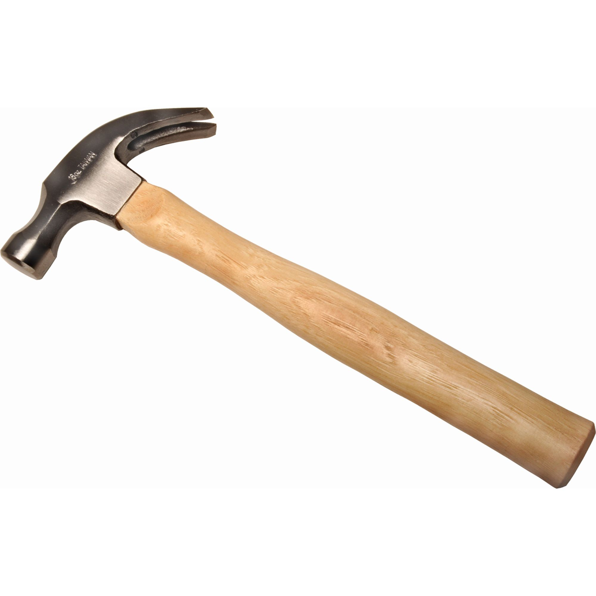
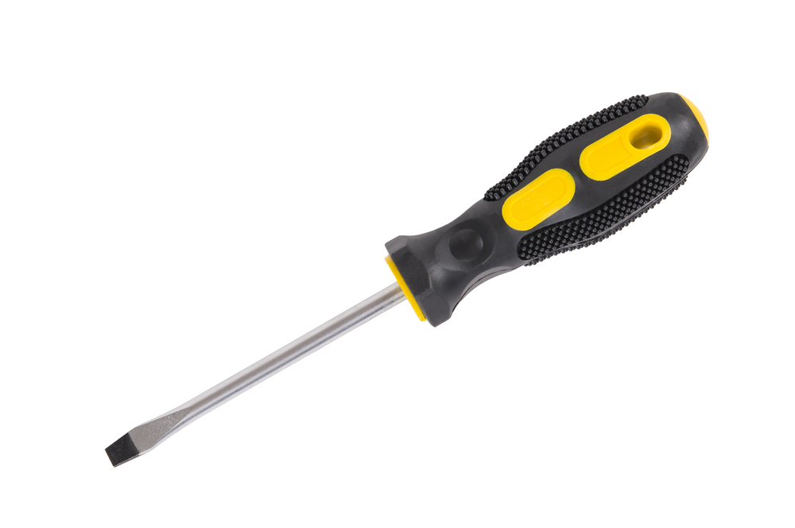

Planning and Striking tools
Planning is the operation used to produce flat surfaces on wood.A plane is a hand tool used for the purpose. The cutting blade used in a plane is very similar to a chisel.The blade of a plane is fitted in a wooden or metallic block, at an angle.
Smoothing Plane
It is used for finishing work and hence, the blade should have a straight cutting edge. Being short, it can follow even the slight depressions in the stock, better than jack plane. It is used after using the jack plane.
Wooden jack plane
The main part of a wooden jack plane is a wooden block called sole, in which steel blade having knife edge is fixed at an angle with the help of wooden edge. The angle of blade is kept about 45 degree to bottom surface of the blade.

Metal jack plane
It serves the same purpose as the wooden jack plane but facilitates a smoother operations and better finish. The body of a metal jack plane is made from a gray iron casting with the side and sole.
Mallet
This a wooden headed hammer of round or rectangular croos section. The striking face is made flat. Mallet is used for striking the cutting tools and as a wooden handle.
Claw Hammer
This is a hammer having steel head and wooden handle. The flat face of the head is used to drive nails and claw portion for extracting nails out of the wood.
Screw Driver
It is used for driving wooden screws into wood or unscrewing them. The length of a screw driver is determined by the length of
